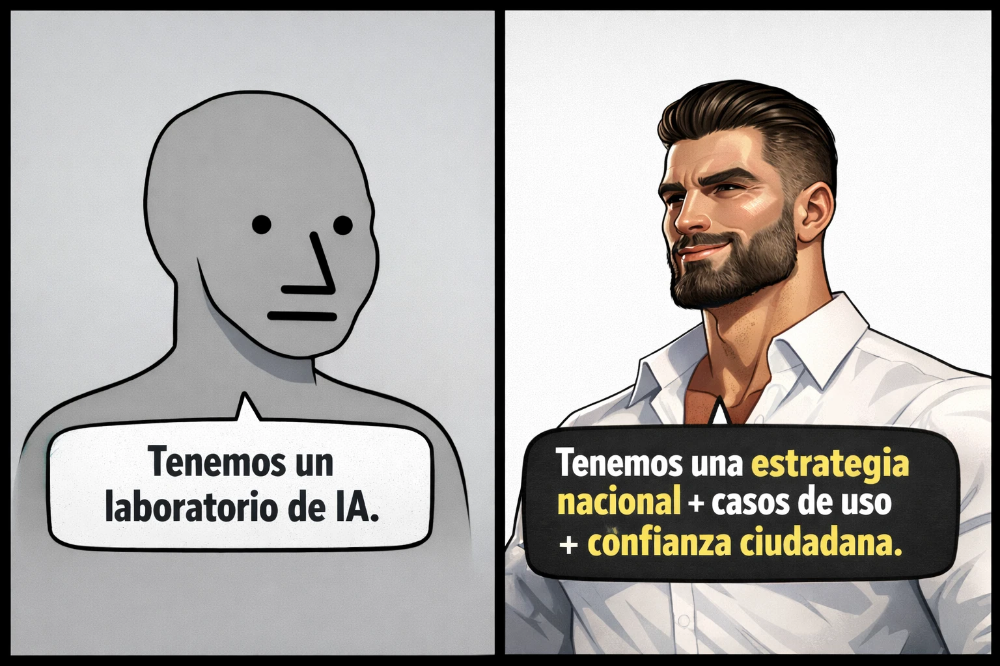

estrategIA #121 ·
Más allá del laboratorio de IA
El contexto
Tener un laboratorio demuestra que una institución experimenta con IA, pero no que la población se esté beneficiando. La comparación pide añadir un plan, aplicaciones útiles y confianza ciudadana. Acompañaba un artículo sobre las diferencias entre países en el acceso y el uso real de estas herramientas.
Publicado en: estrategIA #121 — Informe global de difusión de la IA en 2025: la adopción se acelera, pero la desigualdad digital se convierte en un nuevo muro geopolítico
Leer el texto de la imagen
Tenemos un laboratorio de IA. Tenemos una estrategia nacional + casos de uso + confianza ciudadana.